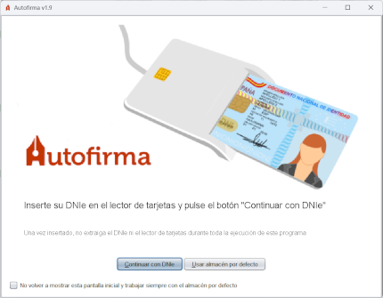

Esta pantalla sólo aparecerá si se ha detectado un lector de tarjetas inteligentes instalado y configurado en el sistema. Aquí el programa queda a la espera de que el usuario inserte su DNI electrónico en el lector o a que indique que no desea utilizar el DNIe.

El usuario puede insertar su DNIe en el lector y pulsar el botón "Continuar con DNIe" para avanzar
firmar con su certificado de firma del DNIe (no es necesario tener instalados los controladores del DNIe)
o pulsar el botón "Usar cualquier certificado" o la tecla Escape si desea utilizar
cualquier certificado importado en su sistema operativo.
Una vez seleccionada una opción, se le mostrará la pantalla de firma.